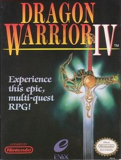

I would say that in every aspect this game improved upon it's predecessors. Battles are fought with story relevant party members. There's tons of weapons, spells, armors, everything. There's a really neat part where you play as a shop owner and you have to get a certain amount of gold to progress. Lots of cool new gameplay concepts here.
The story is were this game really shines above every one of its predecessors. The game takes a chapter based approach, and each chapter you play as different heroes until they ultimately meet up in the final chapter. The intro chapter has you play as a young boy in a small town. In the first you play as a pink armored knight named Ragnar McRyan. The second chapter stars princess Alena Tsarevna and her friend, and apprentice priest named Kiryl. The third chapter has you playing as the wonderful yet underestimated shop-keeper, Torneko. Finally, the fourth chapter has you playing as dancing sisters, Maya and Meena. Each hero has their own story arcs, but ultimately they come together to face their one true enemy, Psaro. Psaro also stars in "Dragon Quest Monsters: The Dark Prince" as the main playable character.
After going to college, after getting my first couple jobs, after growing up ever so slightly. This was my first Dragon Quest. At the time which I played this game it was the first time I had touched the series since I was a child. Quickly it engrossed me, and throughout a long year, one which had me dealing with my first girlfriend and first breakup, I had finally beat it in October of 2024. It was the first Dragon Quest that proved it could grab me even after life through some of its worst at me. After I was forced to grow through adversity none of my peers could comprehend and which I won't mention any further in this article. This game stood still. It was the same Dragon Quest comfort that I had once looked for to protect me as a child, and it still held me there whenever I needed it.